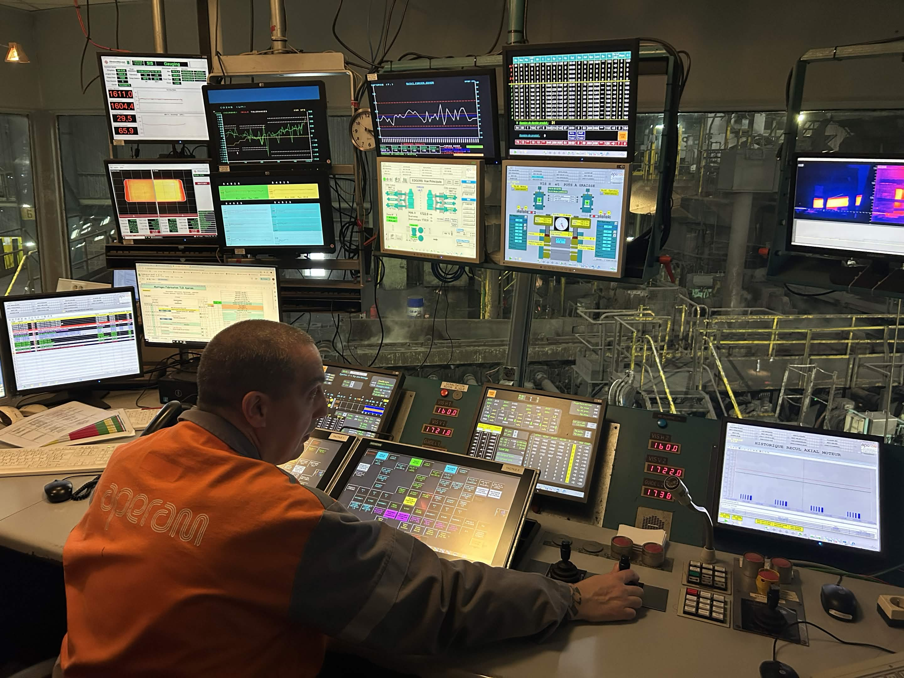
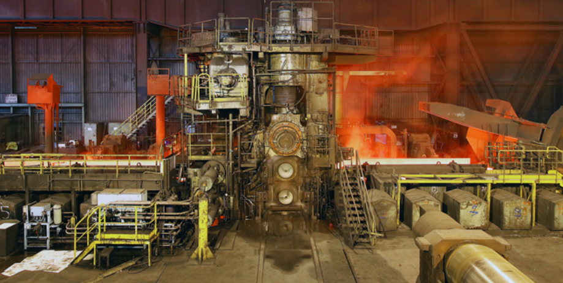
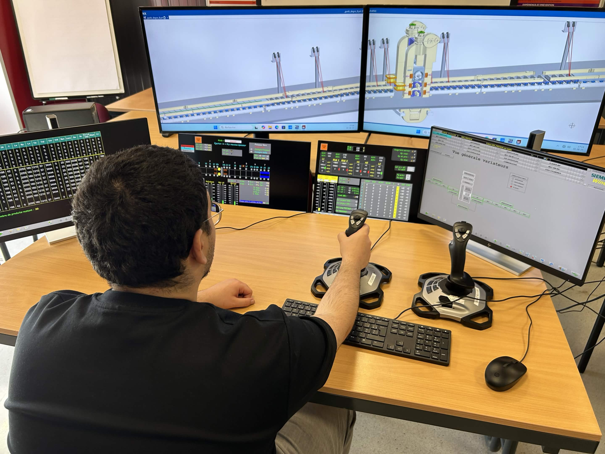

Stage — Station de formation virtuelle
Févr. – juin 2025Aperam, Châtelet — en partenariat avec la Siemens Academy
Aperam exploite un laminoir à chaud qui transforme des brames d'acier en bobines, utilisées ensuite dans l'automobile et la construction. L'objectif du stage était d'améliorer la formation des opérateurs sur le dégrossisseur, via une station virtuelle bâtie sur un jumeau numérique de la machine, créé avec NX MCD.
- Adaptation du programme automate S7 réel pour le rendre compatible avec le jumeau numérique — la tâche la plus longue du stage
- Programmation de trois joysticks de commande : avance/recul de la brame, ouverture/fermeture du guide, écartement des cylindres
- Analyse fonctionnelle du comportement en cas d'incident avec le modèle GEMMA
- Création de scénarios de production et de panne (blocage de brame, collision entre deux brames)
- Développement d'interfaces WinCC dédiées au formateur, pour l'envoi de scénarios et la création de défauts
TIA PortalWinCCNX MCDPLCSIMGEMMA


